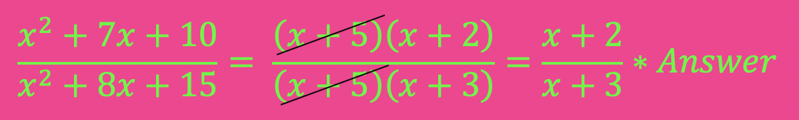
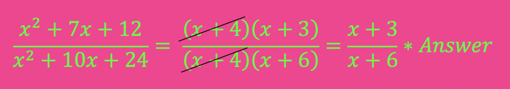
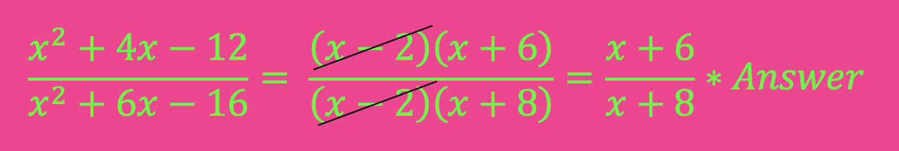
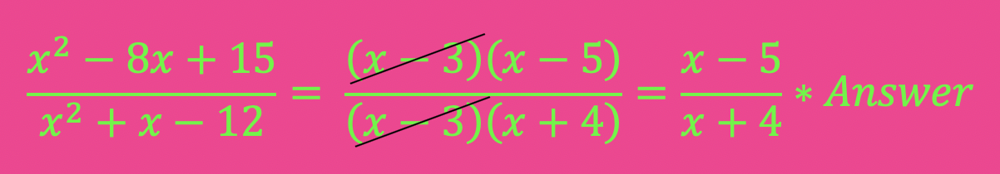
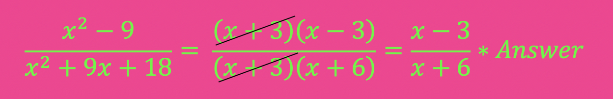
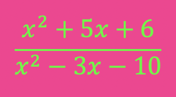
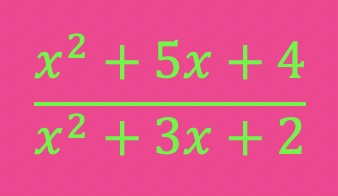
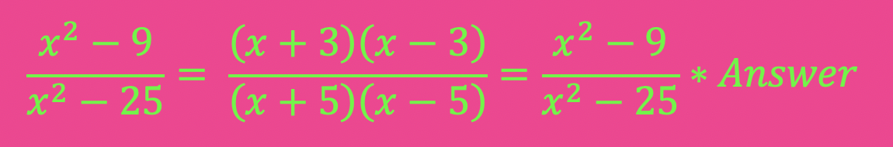
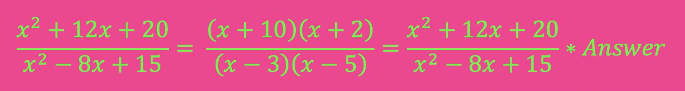

A "Rational Expression" is defined as a fraction that has terms in its numerator and denominator. Like simplifying fractions, you must divide out any number possible if it is shared by the numerator and denominator.
For example: 10/6 can be simplified by dividing the top and bottom by 2 which equals 10 ÷ 2 / 6 ÷ 2 = 5/3.
When fractions can be simplified you must simplify them. The same rule holds true regardless of the expressions in the numerator or denominator.
For example: Simplify 25x3 / 5x = (25 ÷ 5) (x3 ÷ x) = 5x2
Because quadratic expressions occur as a whole, it is not allowed to be simplified like the example above. Your only choice is to factor each expression and look for any common binomials on the top and on the bottom. Then you can cancel them out.
For example, it is NOT correct to say the answer is (x2÷ x2)(3x ÷ 8x)(2 ÷ 12). This is not the way to get the answer. It would be like saying (4 + 6 + 5) ÷ (2 + 3 + 5) would be equal to (4 ÷ 2) + (6 ÷3) + (5 ÷ 5), which it isn't.
Why? Well, using PEMDAS we would simplify parentheses first before dividing.
So (4 + 6 + 5) ÷ (2 + 3 + 5) = 15 ÷ 10 = 3/2.
(4 ÷ 2) + (6 ÷3) + (5 ÷ 5) = (2) + (2) + (1) = 5.
3/2 or 1.5 is not equal to 5. So this method is never valid. If the terms are a part of a "group", you must factor them as a group.
So exactly how do we simplify rational expressions?
The answer is to factor each expression, then cancel out common factors.
Example 1: Simplify:

Step 1: Factor each expression
Step 2: Cancel out common factors
Step 3: Simplify
Example 2: Simplify:

Step 1: Factor each expression
Step 2: Cancel out common factors
Step 3: Simplify
Example 3: Simplify:

Step 1: Factor each expression
Step 2: Cancel out common factors
Step 3: Simplify
Example 4: Simplify:

Step 1: Factor each expression
Step 2: Cancel out common factors
Step 3: Simplify
Factoring trinomials is an important skill, as each problem requires you to factor it. Please review factoring techniques if this step is hard for you: Factoring x2 + bx + c
Example 5: Simplify:

Step 1: Factor each expression
Step 2: Cancel out common factors
Step 3: Simplify
Now you try:
Simplify:

Now you try:
Simplify:

Example 6:
Simplify:

If a rational expression does not share any common factors, then it is already in simplified form because no factors can be cancelled out. The original problem becomes the final answer.
Example 7:
Simplify:

If a rational expression does not share any common factors, then it is already in simplified form because no factors can be cancelled out. The original problem becomes the final answer.